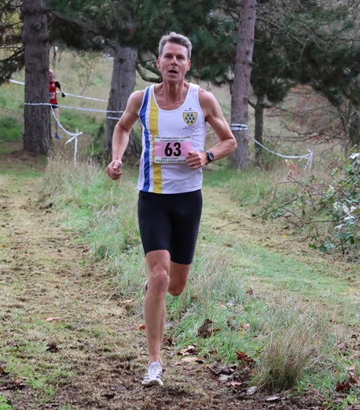
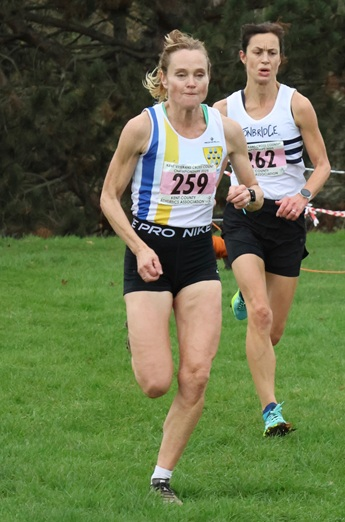
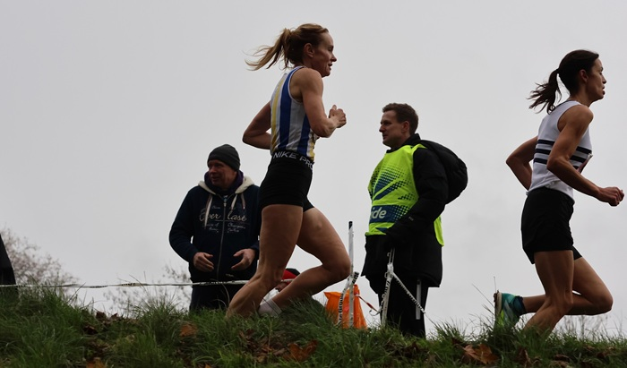
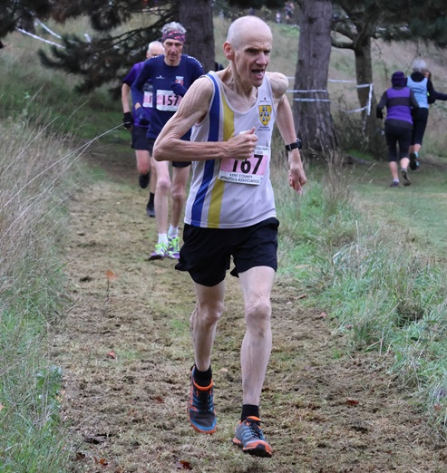

Keith Dowson claimed the M60 bronze medal as four SAC runners contested the Kent Masters cross-country champs at Central Park, Dartford on 22 November.
After dominating on the roads with all three M60 county titles in 2025, Keith finally made the XC podium with a great run in damp windy conditions.


Oloff Van Zyl also had a great run in 7th place - and 1st M55 - in the M50 race, while Rebecca Pickard in the W45 race was also 7th.


And despite three of the SAC entrants being unable to make it, there was still a large field for the M70 race in which Simon Hallpike was our only finisher in 11th.
The full results are here.